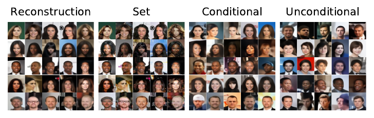

Generative and Inference Models for a Neural Statistician.
 Generative and Inference Models for a Hierarchical Few-Shot Generative Model.
Generative and Inference Models for a Hierarchical Few-Shot Generative Model.
Generative and Inference Models for a Hierarchical Few-Shot Generative Model.
Generative and Inference Models for a Hierarchical Few-Shot Generative Model.
A few-shot generative model should be able to generate data from a distribution by only observing a limited set of examples. In few-shot learning the model is trained on data from many sets from different distributions sharing some underlying properties such as sets of characters from different alphabets or sets of images of different type objects. We study a latent variables approach that extends the Neural Statistician to a fully hierarchical approach with an attention-based point to set-level aggregation. We extend the previous work to iterative data sampling, likelihood-based model comparison, and adaptation-free out of distribution generalization. Our results show that the hierarchical formulation better captures the intrinsic variability within the sets in the small data regime. With this work we generalize deep latent variable approaches to few-shot learning, taking a step towards large-scale few-shot generation with a formulation that readily can work with current state-of-the-art deep generative models.
Sample formation in a Convolutional Neural Statistician with learnable aggregation. For each sample (black background) we plot the attention bars over the input sets (in white background) for four different heads.
Generalization on disjoint Omniglot classes. Models trained on set size 5 and results for a VAE, NSs with mean/max/learnable aggregation (MEAN/MAX/LAG) convolutional variants (C) and for a HFSGM with a hierarchy over c.

Models trained on Omniglot with set size 5 and tested on MNIST, DOUBLE-MNIST and TRIPLE-MNIST (from left to right) with different set size. Models with learnable aggregation (LAG) can adapt better to the new datasets.
Given a small set from an unknown character (right on black background), we sample the model and then refine iteratively using the inference model. We show 20 iterations from left to right. We can see how the generative process refines its guess at each iteration improving c and z in a joint manner.
Iterative sampling. Stochastic Reconstruction, Input Sets, Conditional, Refined, Unconditional sampling on Omniglot. Stochastic Reconstruction, Input Sets, Conditional, Refined, Unconditional sampling on CelebA.